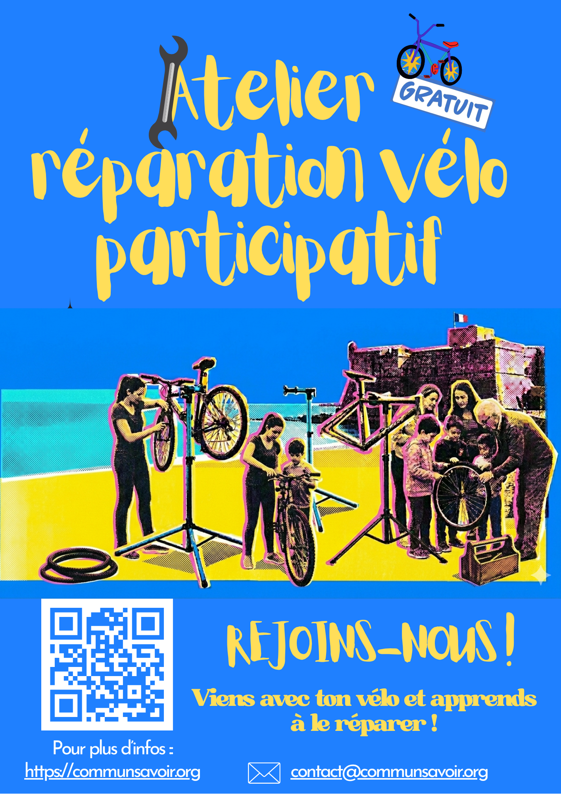

Prochain atelier

🚲 Atelier réparation vélo participatif
Votre frein grince ? Vos vitesses sautent ? Ou vous avez simplement peur de la crevaison ? Ne restez pas bloqué !
Venez apprendre la mécanique ou partager un moment entre passionnés du vélo au quotidien.
📍 Lieu : Plage devant le Fort Carré, Antibes
📅 Date : Mercredi 27 mai 2026
⏰ Horaires : 16h00 - 19h00
Pieds d'atelier et outils spécifiques sont mis à disposition sur place. Venez avec vos pièces de rechange si nécessaire ! Vous serez accompagnés par des bénévoles.
Agenda des activités
Retrouvez toutes nos dates, ateliers de réparation et moments d'échange à Antibes directement sur notre planning partagé :
Qui sommes-nous ?
Commun Savoir est une association née de l'envie de lutter contre l'obsolescence et l'isolement. Nous croyons que la transmission des compétences est la clé d'une société plus résiliente.
🔍 Nos Objectifs
- De fédérer un maximum de personnes autour d’un réseau de partage, de solidarité et d’échange de connaissances théoriques, d’expériences et de savoir-faire manuels (artistiques, artisanaux, agricoles, etc.).
- De favoriser l’émancipation et l’autonomie, individuelles comme collectives, des personnes participantes, à travers d’ateliers participatifs, de chantiers-écoles, de sorties et divers temps de rencontre.
- De promouvoir et sensibiliser à des pratiques respectueuses de l’environnement et de l’ensemble des êtres vivants (recyclage, réemploi, revalorisation, réparation, sobriété, low-tech, circuits locaux, mobilité douce).
- De s’inspirer et d’expérimenter des outils issus de l’éducation populaire.
- D’encourager et de renforcer l’esprit critique et l’ouverture, tout en luttant contre toute forme de discrimination ou d’exclusion.
- De revaloriser l’art, l’artisanat et l’agriculture en créant des passerelles entre un public varié et ces pratiques manuelles.
Devenir Membre
🤝 Rejoindre l'aventure Commun Savoir
Que vous soyez expert en mécanique, pro du numérique, adepte de la couture ou simplement curieux d'apprendre et de soutenir nos actions, votre place est parmi nous ! L'adhésion vous permet de participer à tous nos ateliers à l'année et d'accéder à l'outillage partagé.